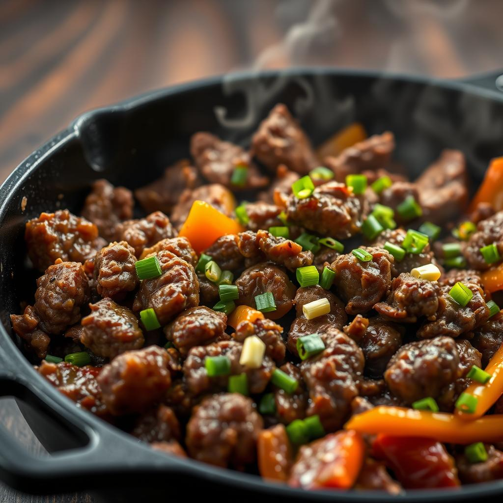
Ground beef dinner ideas: 10 meals that save your weeknight
Struggling to get dinner on the table? These easy ground beef recipes are the ultimate time-savers! From savory skillet hashes to comforting casseroles, discover quick family meals that are budget-friendly and delicious. Perfect for busy weeknights when you need flavor fast. Save this pin for your next grocery run! #groundbeefrecipes #weeknightdinner #easyrecipes #familymeals #comfortfood #groundbeefrecipes #weeknightdinner #easyrecipes #familymeals #comfortfood
READ FULL RECIPE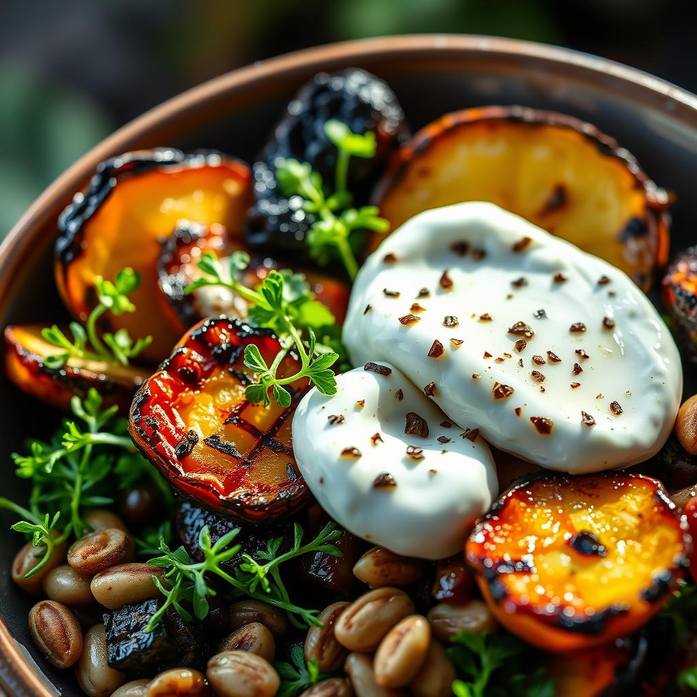
Summer Dinner Recipes: 10 Fresh Meals You Can Make in 20 Minutes
Stop struggling with what to cook! These healthy summer dinner recipes are the ultimate easy weeknight meals for busy evenings. From vibrant Mediterranean bowls to grilled favorites, discover the best fresh, light, and delicious healthy summer food that your whole family will crave. Save this pin for your next grocery run! #SummerDinnerRecipes #EasyWeeknightMeals #HealthySummerFood #RecipeIdeas #SummerCooking #SummerDinnerRecipes #EasyWeeknightMeals #HealthySummerFood #RecipeIdeas #FoodPhotography #SummerEating
READ FULL RECIPE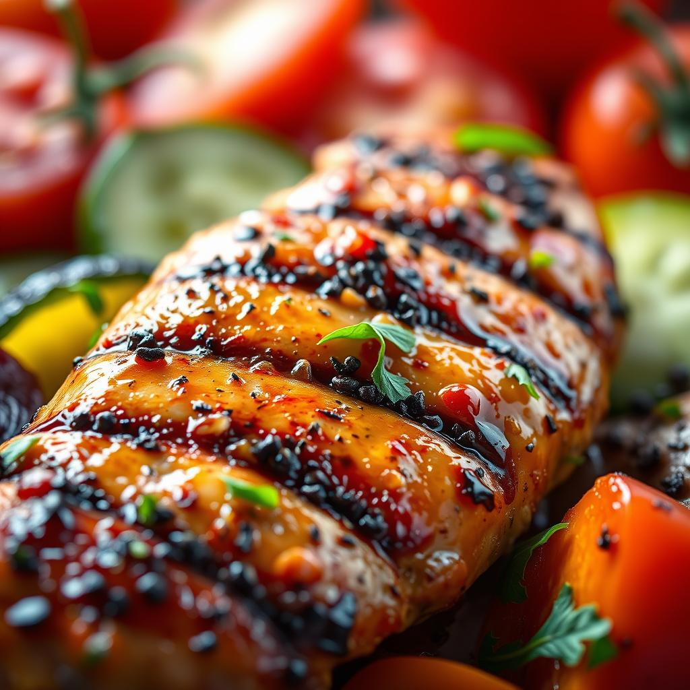
Summer Dinner Recipes: 7 Dinners That Save You 30 Minutes Every Night
Stop stressing over what to cook! These refreshing summer dinner recipes are the ultimate easy weeknight meals for busy families. From healthy grilling ideas to vibrant garden-fresh salads, these flavor-packed dishes require minimal effort and zero oven time. Save this pin to master your seasonal meal prep! #summerrecipes #easyweeknightmeals #healthygrilling #dinnerideas #summerfood #summerrecipes #easyweeknightmeals #healthygrilling #dinnerideas #summerfood
READ FULL RECIPE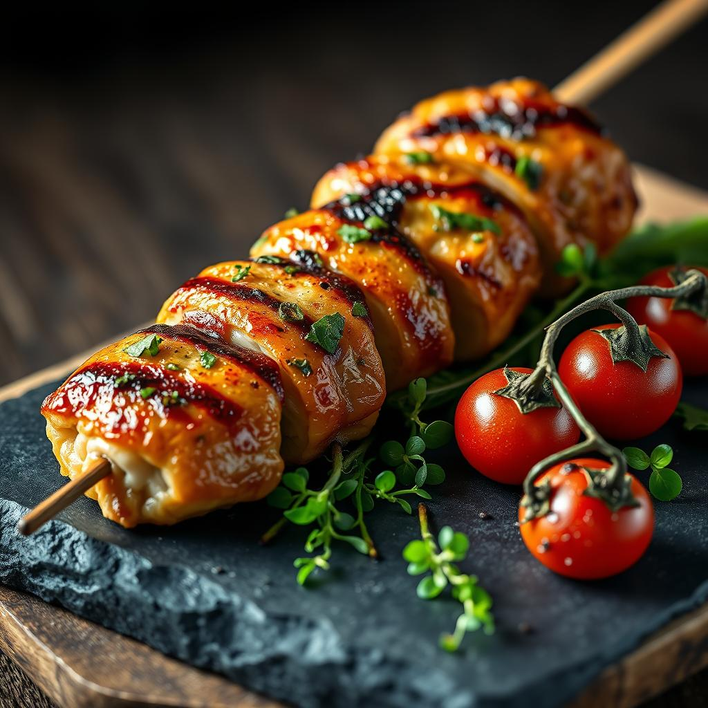
Easy Summer Dinner Recipes: 15-Minute Meals You’ll Crave All Season
Stop stressing about weeknight cooking! These easy summer dinner recipes are packed with fresh, vibrant flavors and require minimal prep. From quick healthy meals to refreshing dinner ideas, discover the ultimate collection of family-friendly dishes that keep your kitchen cool. Perfect for busy weeknights and outdoor dining. Tap to get the full recipes! #summerrecipes #easydinner #healthyrecipes #quickmeals #foodphotography ['#summerrecipes', '#easydinner', '#healthyrecipes', '#quickmeals', '#foodphotography']
READ FULL RECIPE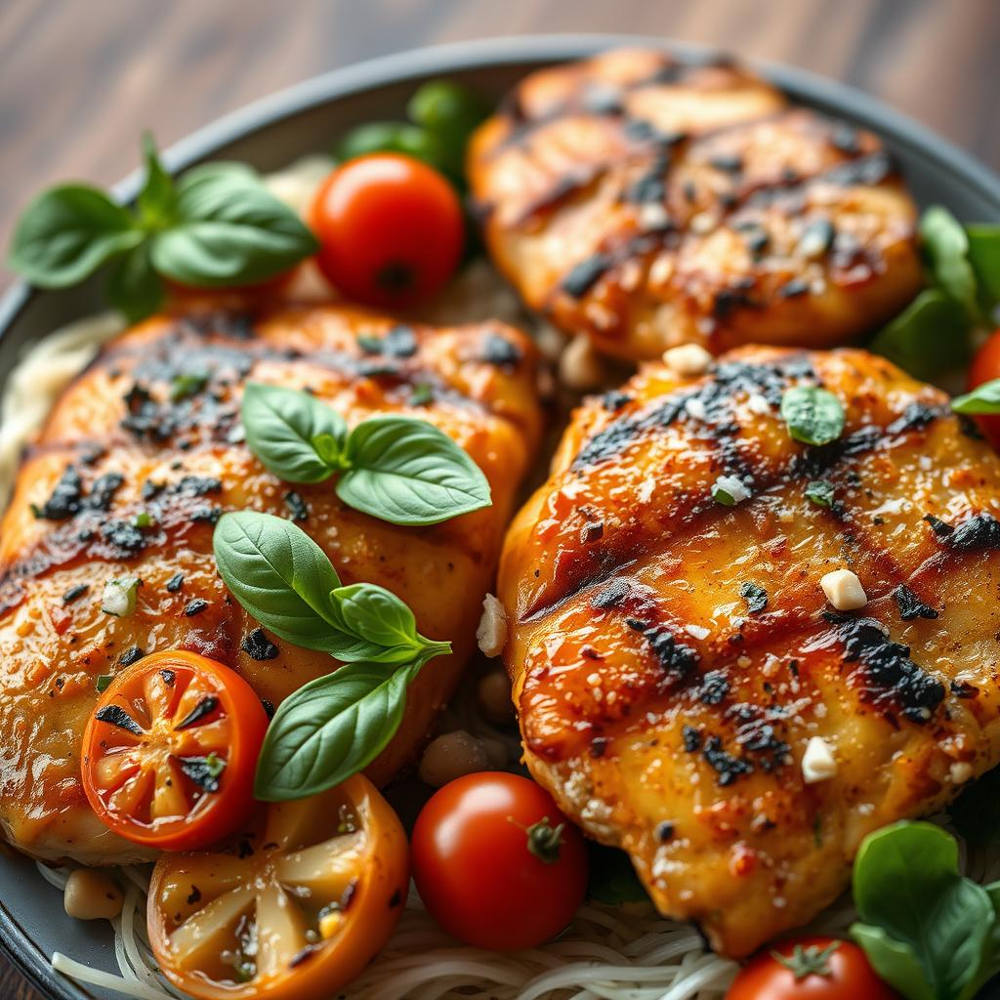
Easy Summer Dinner Recipes: The 15-Minute Meal That Will Change Your Weeknights
Stop stressing over evening meals! Discover these easy summer dinner recipes that are perfectly refreshing and quick to prepare. From zesty proteins to vibrant seasonal produce, these quick healthy meals bring gourmet flavors to your table without the fuss. Perfect for busy weeknights or outdoor dining. Click to save your new favorite summer cooking inspiration! #summerdinner #healthyrecipes #easycooking #quickmeals #foodphotography #summerdinner #easyrecipes #healthyfood #foodporn #pinterestfood
READ FULL RECIPE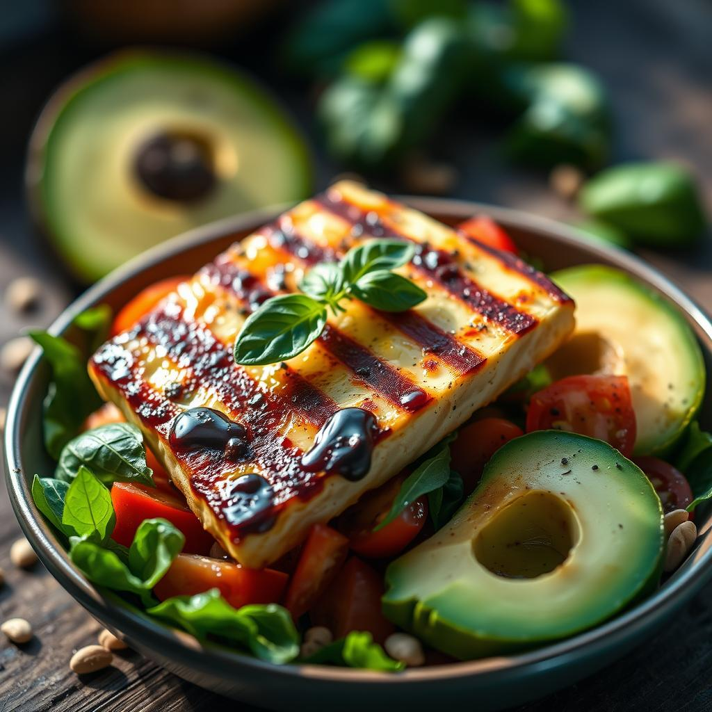
Summer Dinner Ideas: The 15-Minute Recipe That Will Save Your Weeknights
Struggling to find fresh summer dinner ideas that don't heat up the kitchen? Discover these easy healthy recipes perfect for busy evenings. From vibrant seasonal flavors to quick weeknight meals that taste like a gourmet restaurant, this dish is the ultimate solution for stress-free cooking. Save this pin for your next grocery run! #SummerDinner #EasyRecipes #HealthyEating #WeeknightMeals #FoodPhotography #SummerDinner #EasyRecipes #HealthyEating #WeeknightMeals #FoodPhotography #SummerEats #QuickDinner
READ FULL RECIPE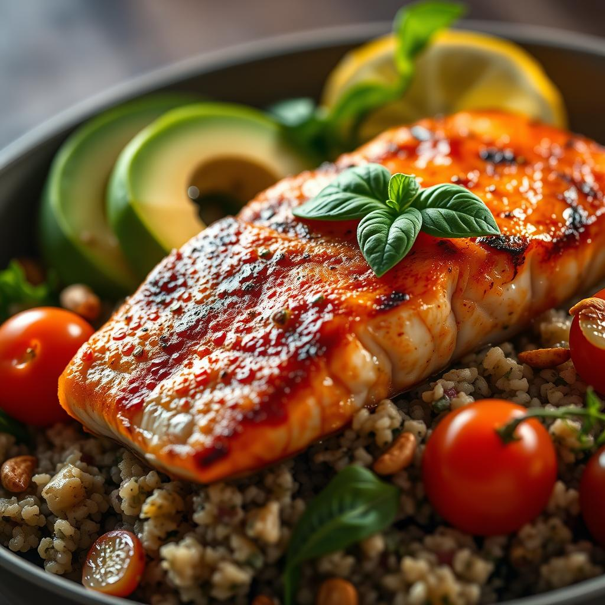
Summer Dinner Recipes: The 15-Minute Meal Everyone Is Obsessed With
Looking for fresh summer dinner recipes that don't require hours in the kitchen? This vibrant, healthy summer food idea is the ultimate easy weeknight meal for busy evenings. Featuring garden-fresh ingredients, a zesty glaze, and perfect textures, it's the recipe you'll be making all season long. Save this pin for your next quick dinner! #summerdinner #easyrecipes #healthyfood #weeknightmeals #freshfood #summerdinner #easyrecipes #healthyfood #weeknightmeals #freshfood #foodphotography #summerrecipes
READ FULL RECIPEBirthday cake recipes: The moistest layer cake you’ll ever bake!
Stop scrolling! Discover the secret to professional-tier birthday cake recipes that stay moist for days. Whether you need easy dessert ideas for a crowd or showstopping cake decorating tips that look like a bakery pro made them, this ultimate guide covers everything. Perfect for beginners and experts alike. Save this pin for your next party planning session! #birthdaycake #dessertrecipes #bakingtips #cakeart #easybaking #birthdaycake #dessertrecipes #bakingtips #cakeart #easybaking #foodphotography
READ FULL RECIPE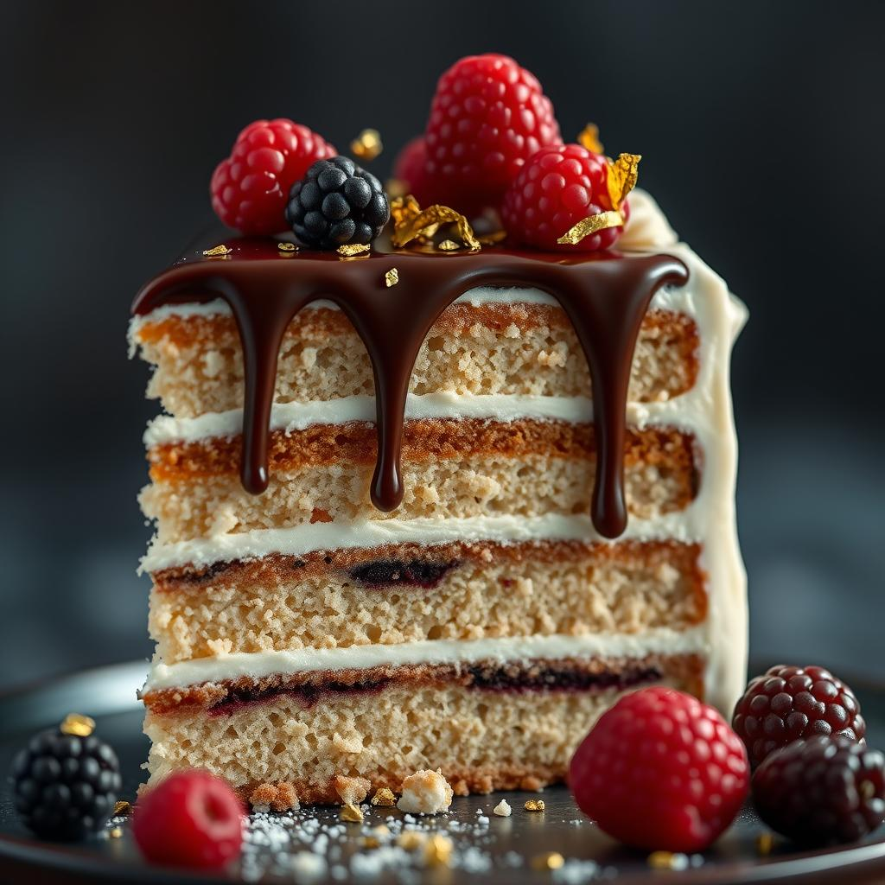
Birthday cake recipes: The secret to the moistest, bakery-style crumb you’ll ever bake!
Stop settling for dry bakes! These Birthday cake recipes are designed for home bakers who want that perfect, bakery-style crumb. Whether you need Easy dessert ideas for a party or want to master a Moist chocolate cake from scratch, this simple method guarantees professional results every single time. Save this for your next celebration! #birthdaycake #bakingrecipes #dessertideas #easybaking #cakerecipes #birthdaycake #bakingrecipes #dessertideas #easybaking #cakerecipes
READ FULL RECIPE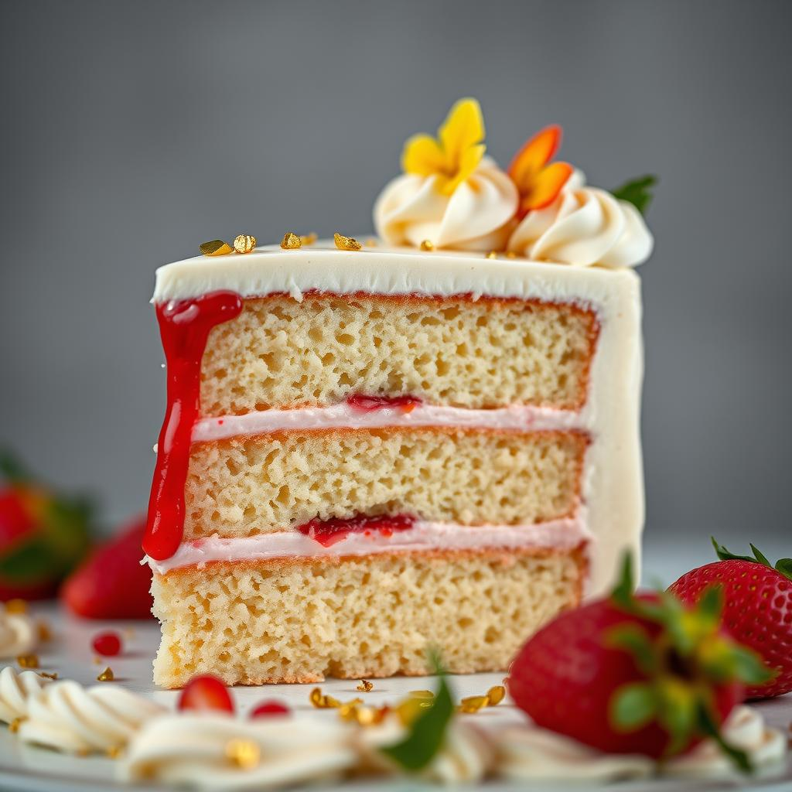
Birthday cake recipes: The secret to the moistest, fluffiest sponge ever!
Stop settling for dry cakes! Discover these birthday cake recipes that promise a bakery-style finish at home. Perfect for beginners, these easy dessert ideas include step-by-step showstopping cake decorating tips that will impress everyone. Learn the pro technique for the perfect crumb. #birthdaycake #dessertrecipes #bakingtips #cakeart #easybaking #birthdaycake #dessertrecipes #bakingtips #cakeart #easybaking
READ FULL RECIPE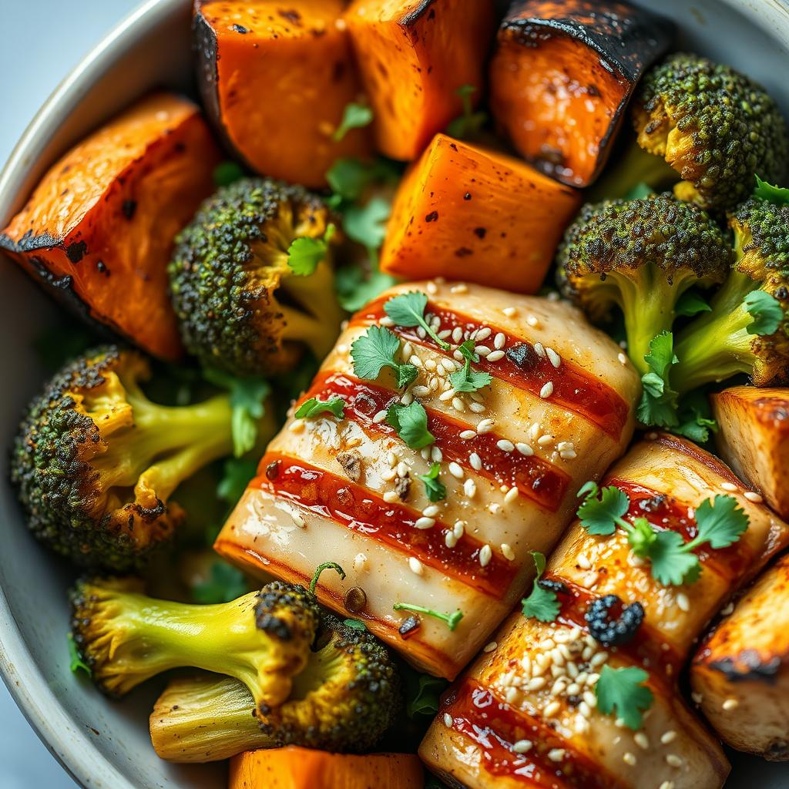
Healthy Meal Prep Recipes: That Actually Taste Like Takeout
Stop settling for boring food! These healthy meal prep recipes are packed with flavor and perfect for easy clean eating dinner ideas. Whether you need high protein weight loss meals or just quick, nutritious inspiration, this guide has you covered. Save these healthy recipes for your next grocery haul and transform your weekly routine! #healthyrecipes #mealprep #cleaneating #weightlossjourney #healthyfood #healthyrecipes #mealprep #cleaneating #weightloss #healthyfood
READ FULL RECIPE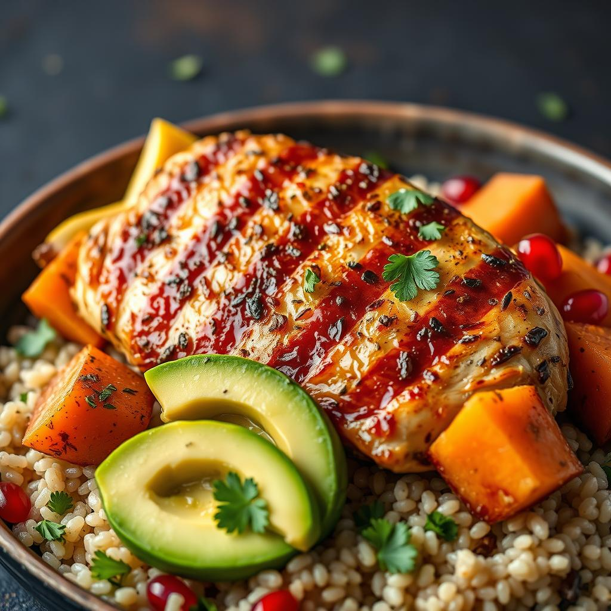
Healthy Meal Prep Recipes: The 20-Minute Dinners You Need To Try
Stop struggling with your diet! These healthy meal prep recipes make clean eating dinner ideas delicious and easy. Discover high protein weight loss meals that actually taste like a cheat meal. Perfect for busy weeknights, these nutrient-dense recipes will save you time and keep you on track. Save this pin for your next grocery run! #healthyeating #mealprep #cleaneating #recipeideas #weightloss #healthymealprep #cleaneating #highproteinrecipes #healthyrecipes #mealprepsunday #foodphotography
READ FULL RECIPE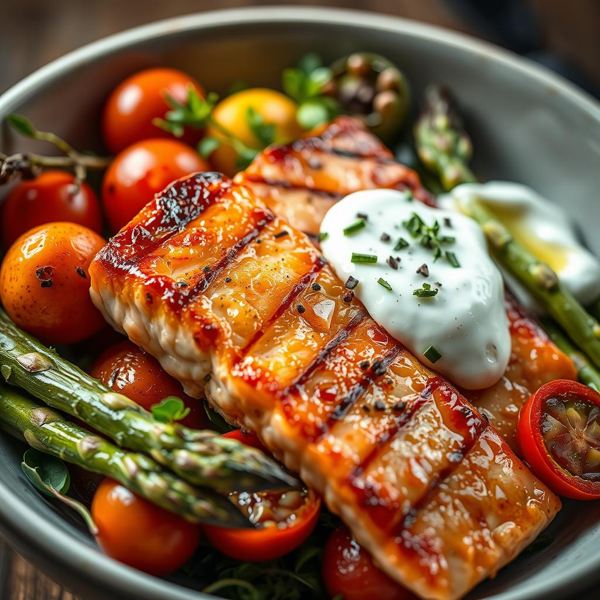
Healthy Meal Prep Recipes: The 20-Minute Secret to Staying Lean
Stop stressing over your diet! Discover these healthy meal prep recipes that make clean eating effortless and delicious. Perfect for busy weeknights, these high protein weight loss meals are packed with flavor and nutrients. Save this pin for your next grocery run and transform your health today. #healthyeating #mealprep #cleaneating #weightlossrecipes #healthyrecipes #healthyrecipes #mealprep #cleaneating #highprotein #weightloss
READ FULL RECIPE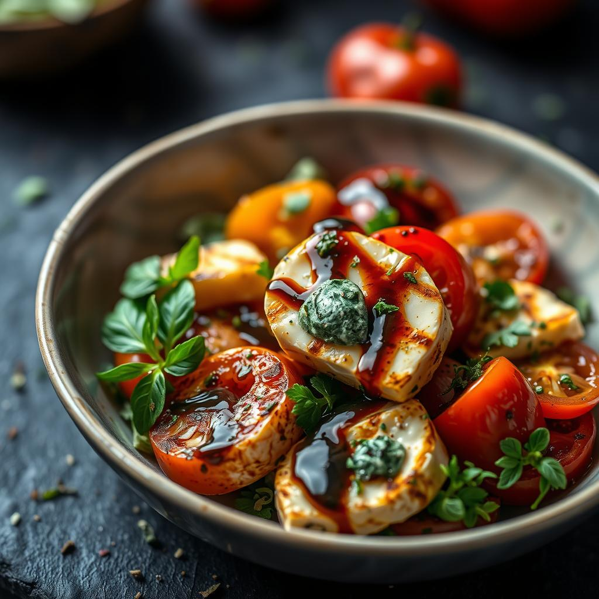
Summer Dinner Ideas: 10 Recipes You Haven't Tried Yet
Looking for fresh summer dinner ideas that don't heat up your kitchen? Discover easy healthy weeknight meals featuring vibrant produce and light proteins. From zesty grilled skewers to chilled pasta salads, these fresh seasonal recipes are perfect for busy weeknights. Save this pin for your next grocery run! #summerdinnerideas #healthyrecipes #easymeals #freshfood #summerrecipes #summerdinnerideas #easyhealthymeals #freshseasonalrecipes #dinnerinspiration #foodphotography
READ FULL RECIPE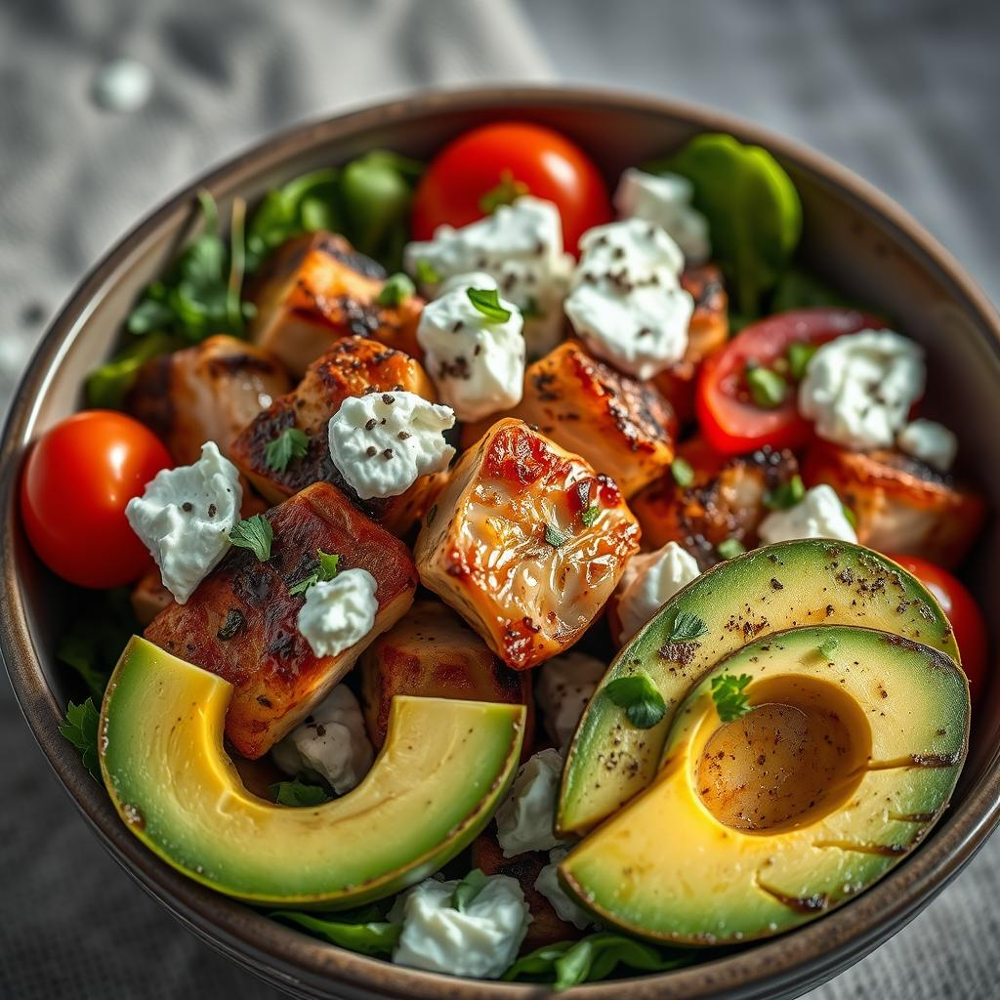
Summer dinner recipes: 15-Minute Meals You’ll Crave All Season
Stop stressing over what to cook! These summer dinner recipes are perfect for busy weeknights when you want healthy summer food without the effort. From fresh Mediterranean bowls to zesty grilled favorites, discover the best easy weeknight meals that will save you time and keep your kitchen cool. Save these pins for your next grocery run! #SummerDinner #EasyRecipes #HealthyEats #WeeknightDinners #SummerFood #SummerDinner #EasyRecipes #HealthyEats #WeeknightDinners #SummerFood
READ FULL RECIPE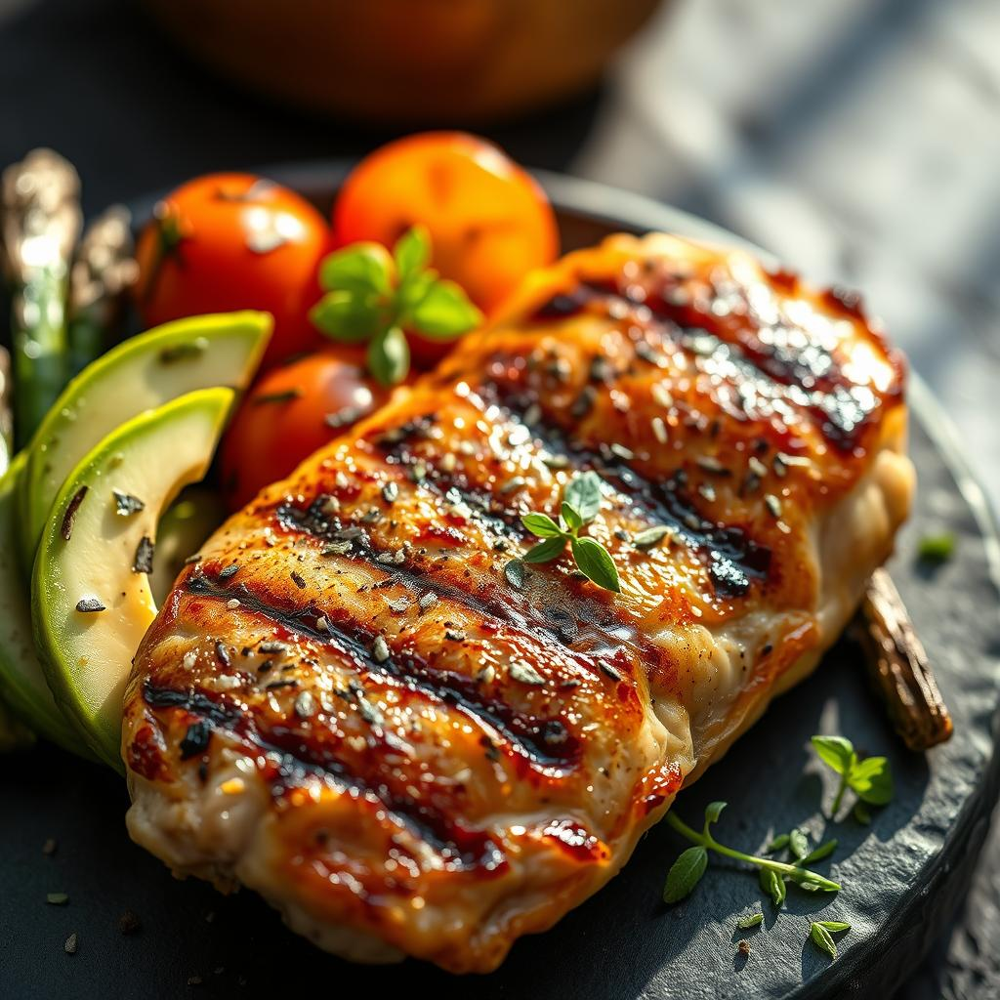
Summer dinner recipes: 15-Minute Meals You’ll Crave All Season
Stop stressing over what to cook! These refreshing summer dinner recipes are the ultimate easy weeknight meals for busy evenings. From vibrant Mediterranean bowls to light, healthy summer food that keeps the kitchen cool, discover how to elevate your dining routine. Perfect for al fresco patio nights. Save this list for your next grocery haul! #summerrecipes #easyweeknightmeals #healthydinner #dinnerideas #summerfood #summerrecipes #easyweeknightmeals #healthydinner #dinnerideas #summerfood #pinterestfood #viralrecipes
READ FULL RECIPE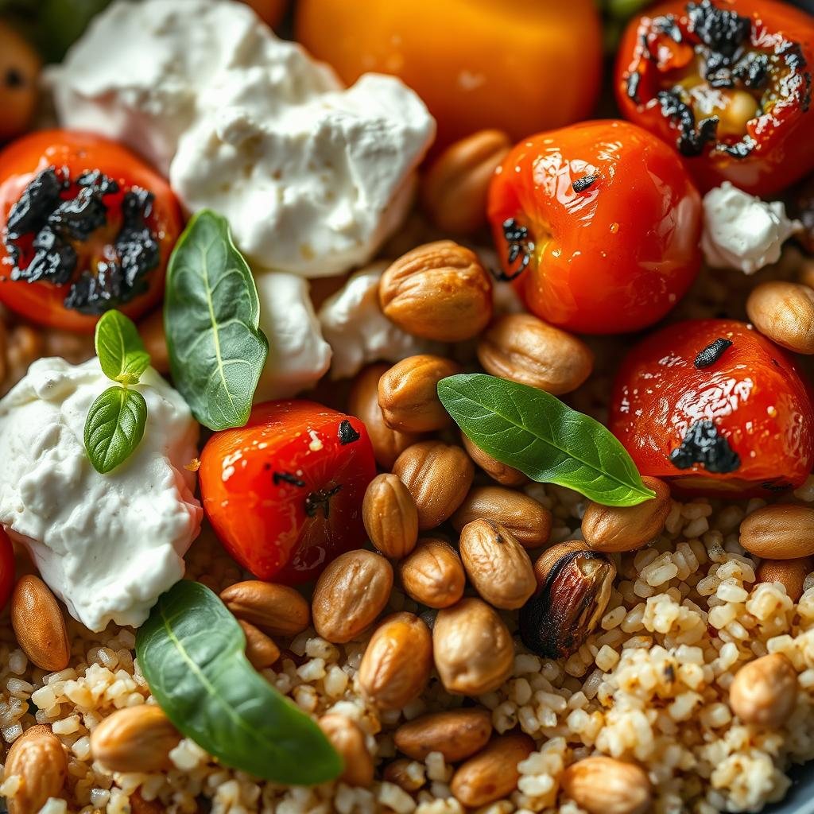
Healthy Summer Recipes: 7 Dinners That Melt Fat Fast
Discover the best Healthy Summer Recipes that actually taste incredible! From refreshing low calorie dinners to easy weight loss meals, these vibrant dishes are perfect for your seasonal meal prep. Get the full list of healthy snacks and light summer dinners that will leave you feeling energized and satisfied all season long. Save this pin for your next grocery haul! #HealthySummerRecipes #WeightLossMeals #CleanEating #SummerFood #HealthySummerRecipes #WeightLossMeals #EasySummerDinners #CleanEating #HealthyMealPrep #PinterestFood
READ FULL RECIPE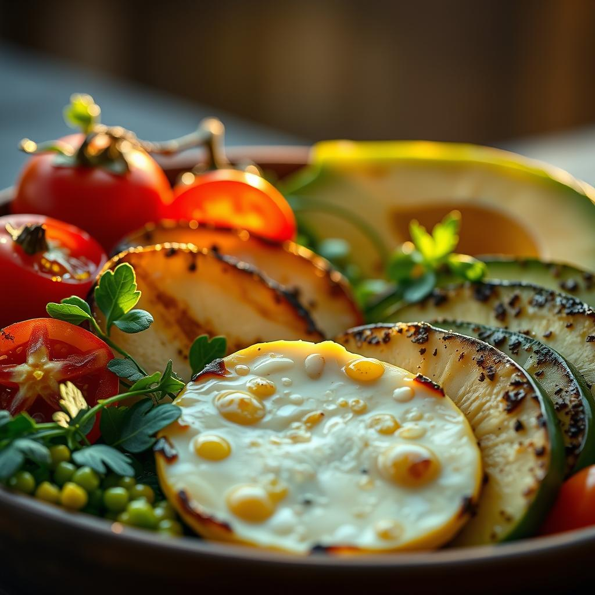
Healthy Summer Recipes: The 15-Minute Meals You Need To Try
Stop struggling with dinner! Discover these Healthy Summer Recipes that are perfect for busy weeknights. These Easy Weight Loss Meals are packed with fresh flavor and will keep you cool. If you need a Refreshing Low Calorie Dinner that actually tastes gourmet, save this pin now for your next meal prep session! #healthyeating #summerrecipes #weightloss #mealprep #cleaneating #HealthySummerRecipes #EasyWeightLossMeals #RefreshingDinner #PinterestFood #CleanEating
READ FULL RECIPE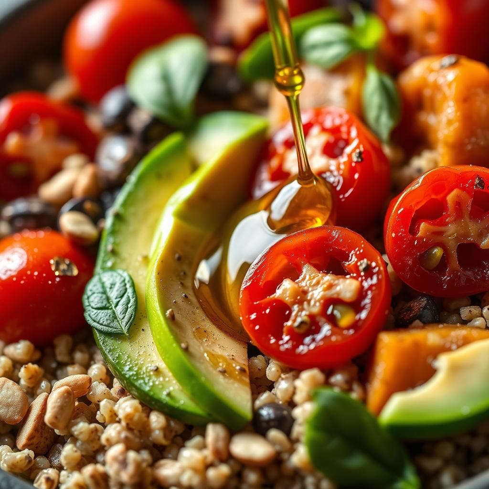
Healthy Summer Recipes: The 15-Minute Meals That Actually Burn Fat
Discover the best Healthy Summer Recipes that taste like a gourmet vacation. These Easy Weight Loss Meals are packed with flavor, fresh produce, and zero guilt. Perfect for busy weeknights, these Fresh Mediterranean Diet Food ideas will transform your nutrition. Click to save these healthy recipes for your next meal prep! #HealthySummerRecipes #WeightLossMeals #CleanEating #SummerEats #HealthyDinner #HealthySummerRecipes #EasyWeightLossMeals #FreshMediterraneanDietFood #SummerEats #CleanEatingRecipes #HealthyMealPrep #SummerCooking
READ FULL RECIPE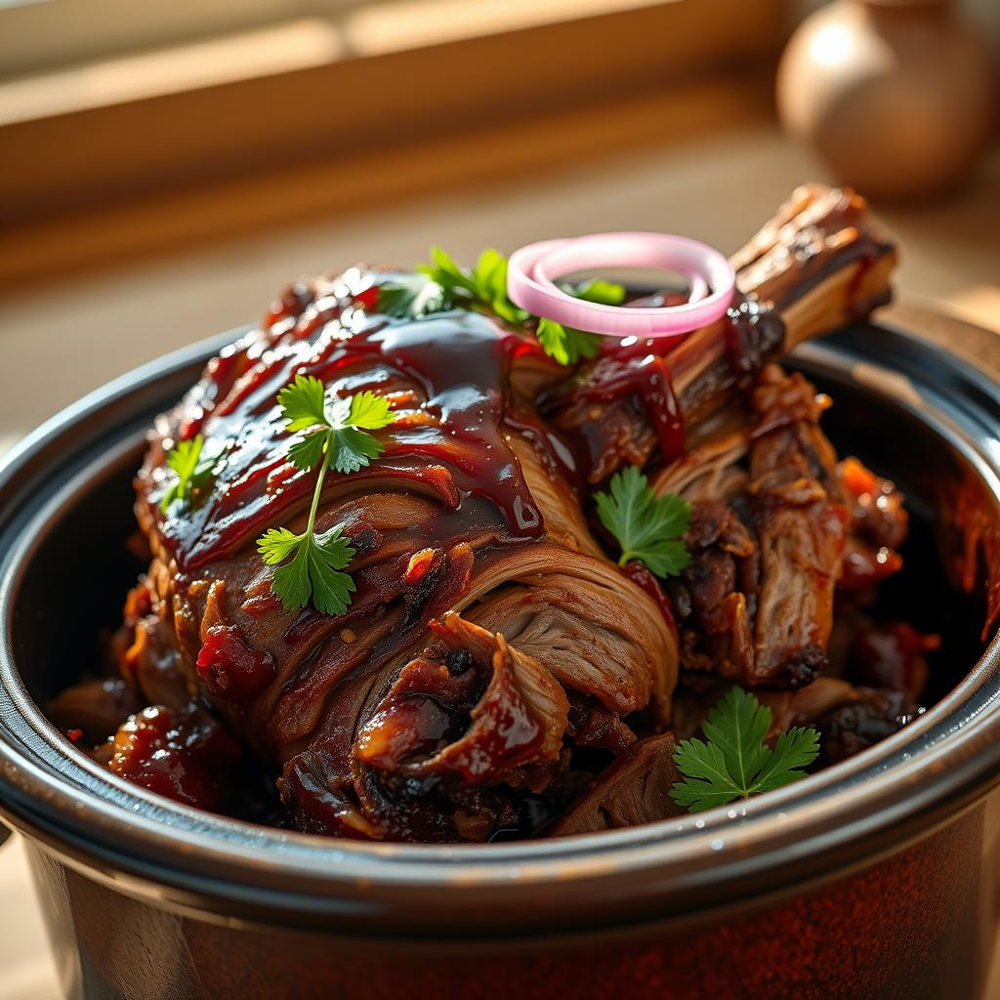
Summer Crockpot Recipes: The Lazy Dinners You’ll Make All Season!
Stop heating up your kitchen! Discover these refreshing Summer crockpot recipes that keep your house cool while delivering maximum flavor. From tender shredded tacos to zesty bbq pulled pork, these easy slow cooker meals are the ultimate no-heat summer dinner ideas for busy weeknights. Save this list for your next grocery run! #summerrecipes #crockpotmeals #easydinner #slowcooker #summereats #summerrecipes #crockpotmeals #easydinner #slowcooker #summereats #mealprep #foodphotography
READ FULL RECIPE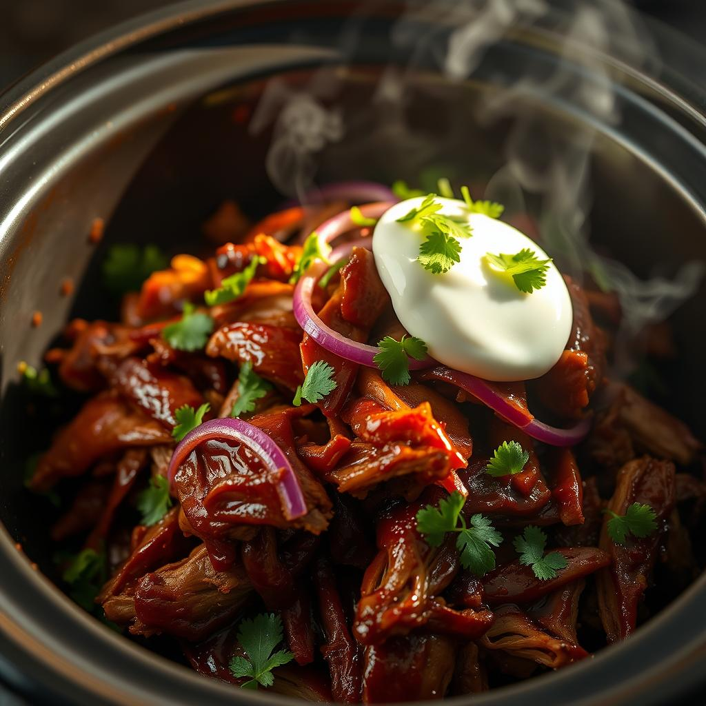
Easy Crockpot Recipes: The Summer Hack You Need
Stop heating up your kitchen! Discover these easy crockpot recipes perfect for hot weather. From tender BBQ pulled pork to zesty shredded chicken tacos, these summer slow cooker meals are the ultimate no-heat summer dinner ideas for busy families. Save this pin for your next stress-free dinner plan. #easycrockpotrecipes #summerdinner #slowcooker #weeknightmeals #easycrockpotrecipes #summerdinner #slowcooker #weeknightmeals #foodphotography #summerrecipes
READ FULL RECIPE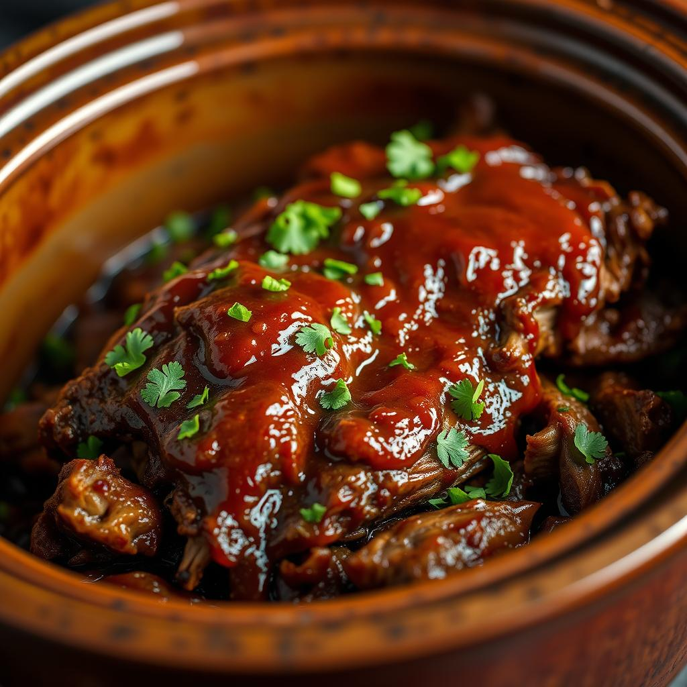
Easy Summer Crockpot Meals: The Secret To A Cool Kitchen & Delicious Dinners
Stop heating up your house! Discover these easy summer crockpot meals that make dinner effortless. From shredded BBQ chicken to zesty slow cooker dinner recipes, these no-heat summer cooking hacks keep your home cool and your family full. Get the recipes that save time and keep your kitchen refreshing all season long! #summerrecipes #crockpotmeals #slowcooker #summerrecipes #crockpotmeals #slowcooker #easyrecipes #dinnerideas #noheatcooking
READ FULL RECIPE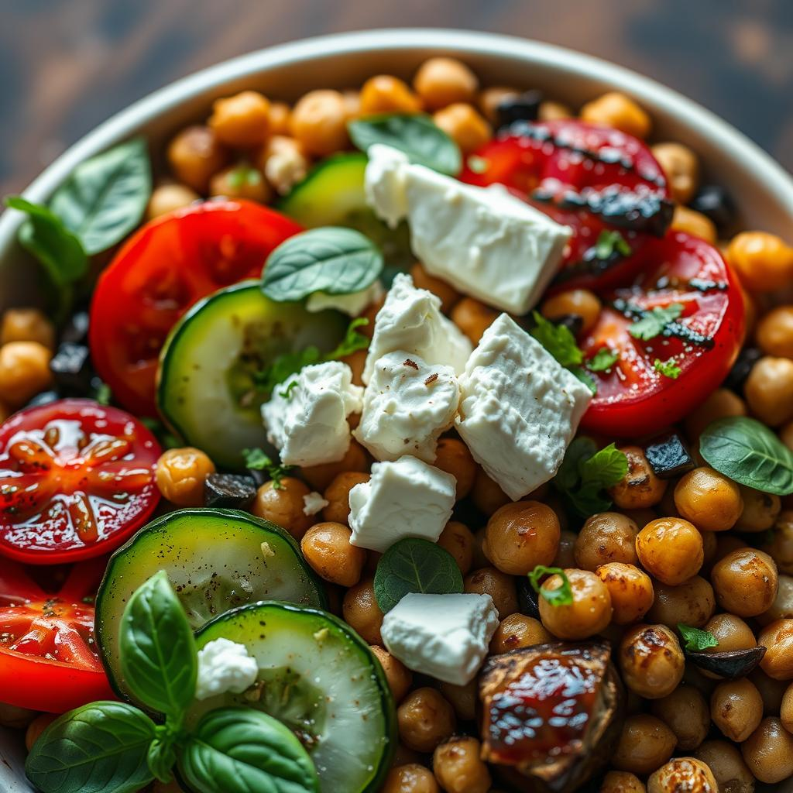
Easy Summer Dinner Ideas: 10 Recipes That Save You Hours in the Kitchen
Looking for fresh, Easy Summer Dinner Ideas? Ditch the oven and try these Quick No-Cook Recipes that are perfect for busy weeknights. From crisp salads to vibrant grain bowls, these Healthy Summer Meal Prep dishes are packed with flavor and ready in minutes. Save these for your next grocery haul! #EasySummerRecipes #SummerEats #HealthyDinnerIdeas #NoCookMeals #EasySummerRecipes #SummerDinner #FoodPhotography #MealPrepGoals #HealthyEating #SummerEats
READ FULL RECIPE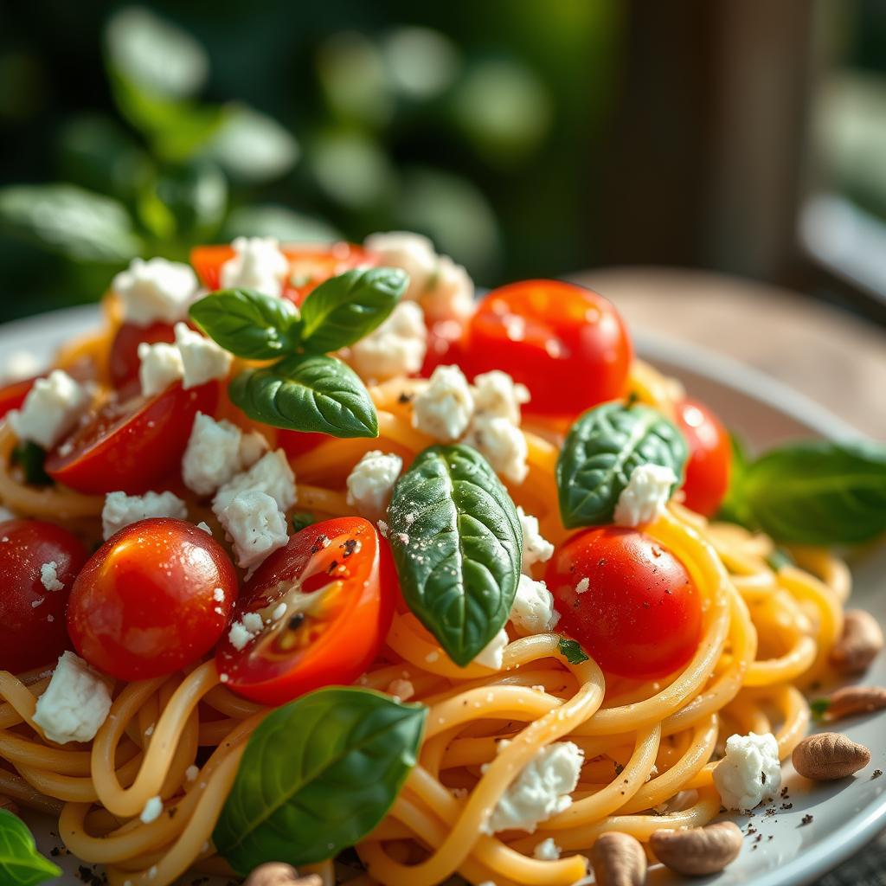
Easy Summer Dinner Recipes: 10 Meals That Require Zero Oven Time
Beat the heat with these refreshing easy summer dinner recipes. From vibrant salads to chilled no-cook summer meals, discover how to keep your kitchen cool while serving gourmet flavors. These healthy, fresh summer appetizers and main courses are perfect for weeknight family dining. Save these ideas for your next backyard BBQ! #EasySummerRecipes #NoCookMeals #SummerFood #HealthyDinnerIdeas #PinterestFood ['#EasySummerRecipes', '#NoCookMeals', '#SummerFood', '#HealthyDinnerIdeas', '#PinterestFood']
READ FULL RECIPE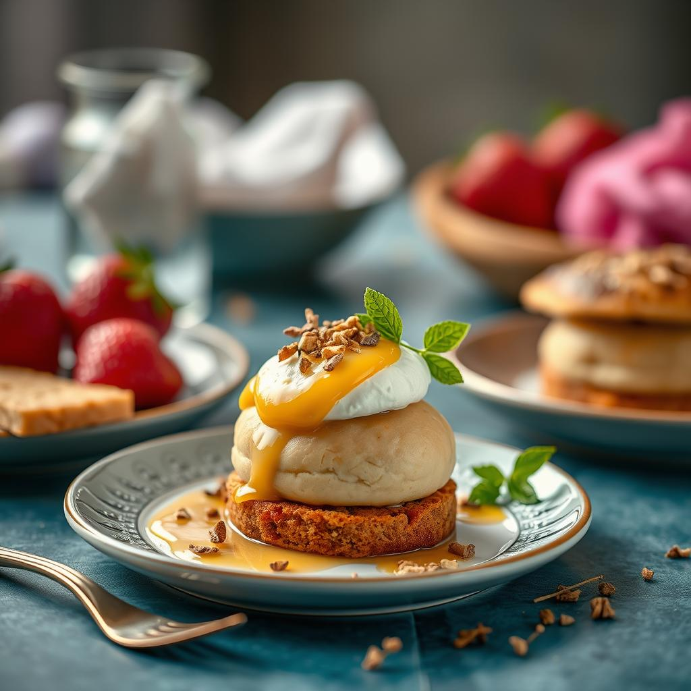
Easy Summer Recipes
Check out this amazing Easy Summer Recipes recipe and guide on el-mordjene.info!
READ FULL RECIPE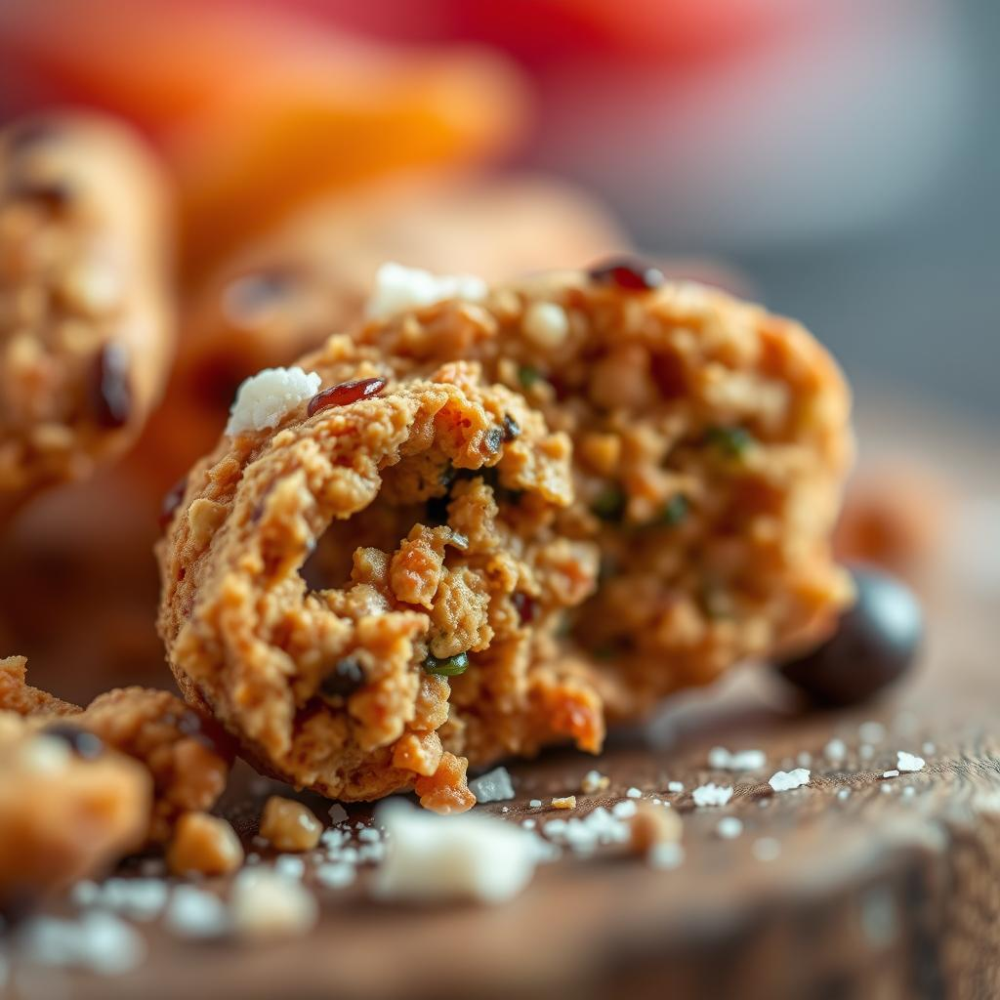
Healthy Snacks Recipes
Check out this amazing Healthy Snacks Recipes recipe and guide on el-mordjene.info!
READ FULL RECIPE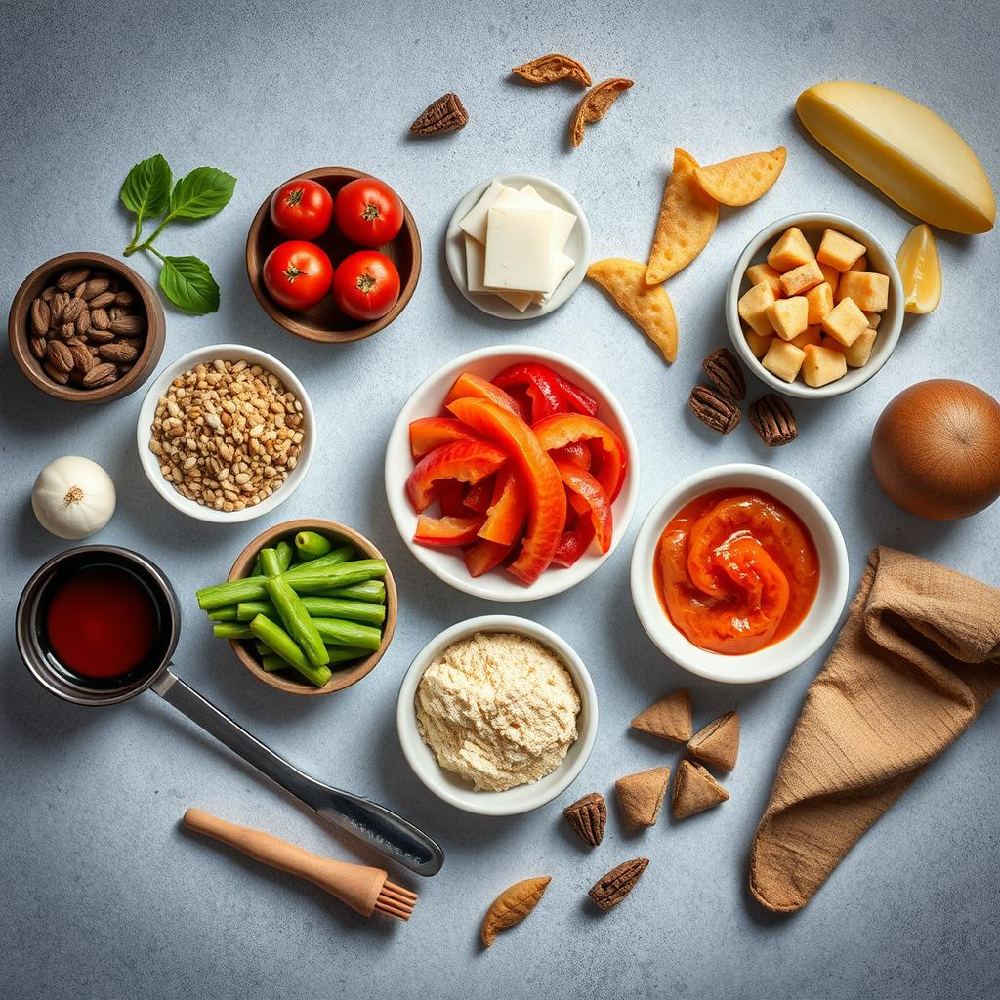
Healthy Snacks Recipes
Check out this amazing Healthy Snacks Recipes recipe and guide on el-mordjene.info!
READ FULL RECIPE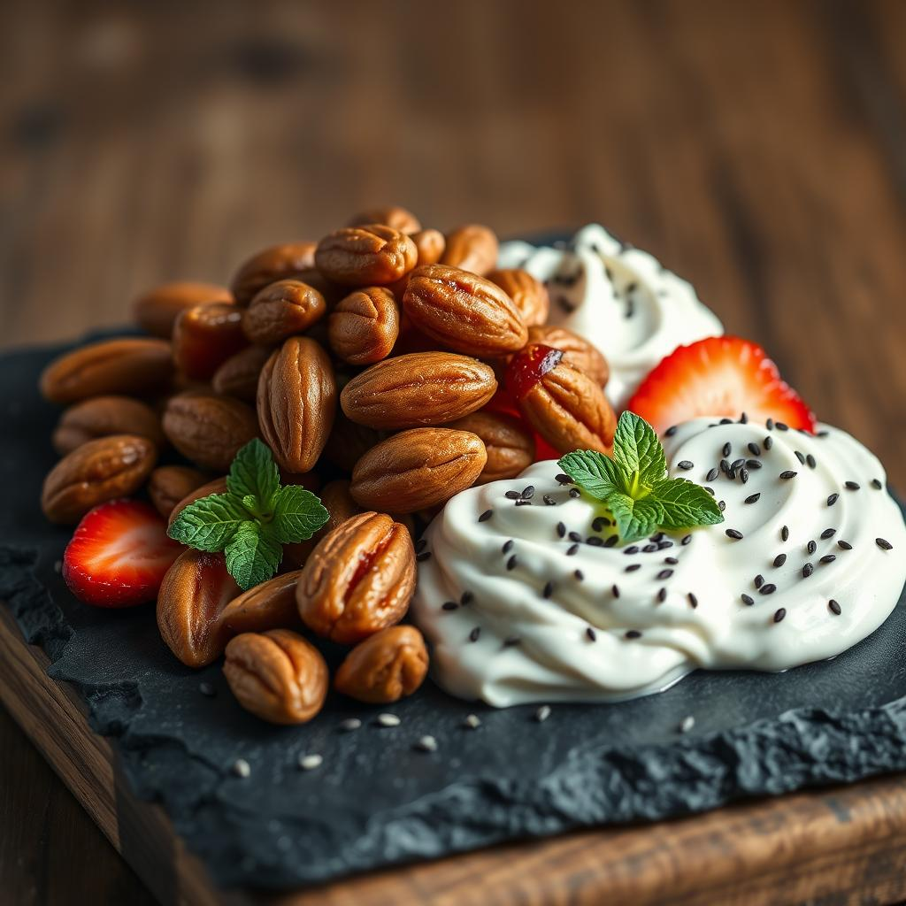
Healthy Meal Prep Snacks: The Secret to Staying Full All Day!
Stop reaching for processed junk! These high protein snack recipes are perfect for your weekly meal prep. Discover easy weight loss snacks that actually taste amazing and keep cravings at bay. From crispy roasted chickpeas to creamy bliss balls, these nutrient-dense bites are your new go-to. Save this pin for your next grocery run! #healthysnacks #mealprep #weightlossrecipes #cleaneating #proteinbites #healthysnacks #mealprep #highprotein #weightlossrecipes #cleaneating #snackideas #healthyfood
READ FULL RECIPE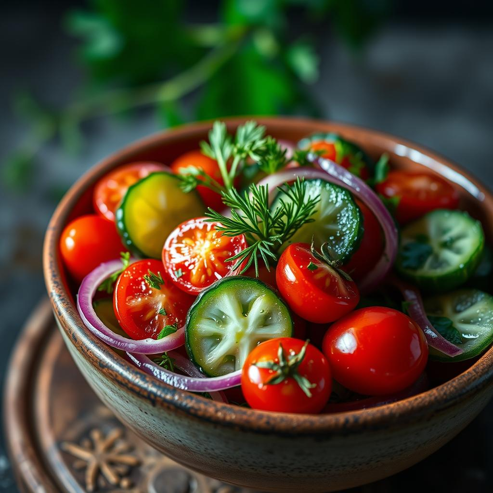
Tomato Cucumber Salad: The 5-Minute Side Dish Everyone Craves
Looking for the best healthy salad recipes for your next BBQ? This refreshing Tomato Cucumber Salad is the ultimate easy summer side dish. Crisp, vibrant, and tossed in a tangy vinaigrette, it's the perfect crowd-pleaser that comes together in minutes. Save this healthy recipe for your next gathering! #HealthySaladRecipes #SummerSides #EasyRecipes #CleanEating #HealthySaladRecipes #TomatoCucumberSalad #EasySummerSides #PinterestFood #CleanEatingRecipe
READ FULL RECIPE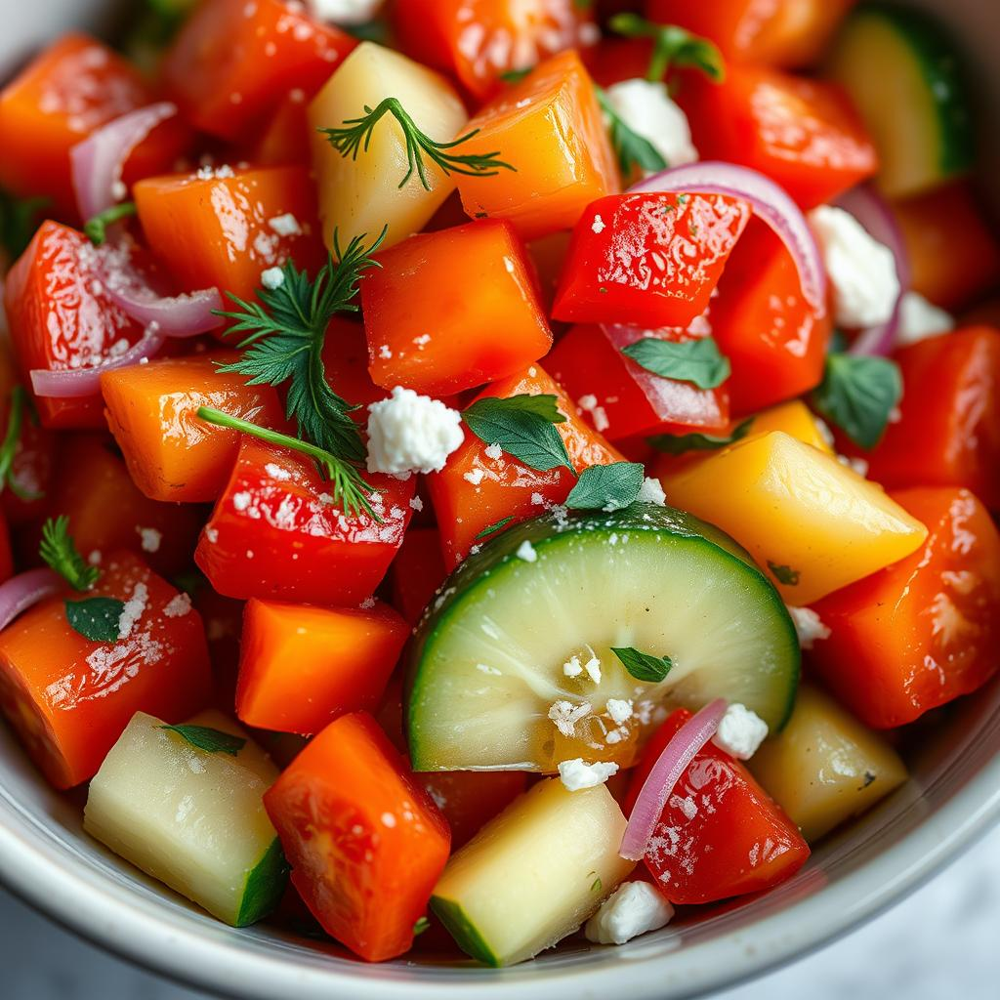
Healthy Summer Salad Recipes: The Secret Dressing Everyone Wants
Searching for the ultimate easy tomato cucumber salad? This refreshing Mediterranean side dish is the perfect crisp, cool addition to any dinner. Packed with garden-fresh flavors and a zesty vinaigrette, it's the healthy summer salad recipe you'll be making on repeat all season long. Quick, vibrant, and incredibly delicious! #TomatoCucumberSalad #HealthyEating #SummerRecipes #EasySideDish #CleanEating #TomatoCucumberSalad #HealthySummerSalad #MediterraneanDiet #EasyRecipes #FreshFood
READ FULL RECIPE
Healthy Summer Salad Recipes: The Secret Dressing That Changes Everything
Looking for the ultimate Healthy Summer Salad Recipes? This Fresh Tomato Cucumber Salad is the perfect Easy Mediterranean Side Dish for your next cookout. Learn the simple vinaigrette secret that makes these garden veggies pop. Crisp, refreshing, and naturally gluten-free! Save this for your next BBQ. #summersalad #healthyeating #mediterraneanfood #saladrecipe #freshveggies #HealthySummerSalad #MediterraneanDiet #EasyRecipes #FoodPhotography #FreshEats
READ FULL RECIPERotel Dip Recipe: The Secret Ingredient That Makes It Creamier
Looking for the ultimate easy party appetizers? This 5-minute Rotel dip recipe is the only game day food idea you need. It’s irresistibly cheesy, perfectly spicy, and disappears in seconds. Click to see the secret ingredient for the perfect texture! #RotelDip #EasyAppetizers #GameDayEats #PartyFood #DipRecipe #RotelDip #EasyAppetizers #GameDayEats #PartyFood #DipRecipe #ComfortFood #PinterestFood
READ FULL RECIPE
Easy Party Appetizers: The Secret Ingredient for the Creamiest Rotel Dip
Master the art of easy party appetizers with this crowd-pleasing Rotel dip with ground beef. This slow cooker dip recipe is the ultimate game-day hack, featuring a rich, velvety cheese blend and savory spice that disappears in minutes. Perfect for hosting or holiday snacking! Get the full recipe and pro tips for the smoothest melt every single time. #roteldip #easyrecipes #partyfood #appetizerideas #diprecipe #slowcookerrecipes #comfortfood
READ FULL RECIPE
Easy Party Appetizers: The Only Rotel Dip Recipe You'll Ever Need
Looking for the ultimate crowd-pleasing snack? This creamy Rotel dip with sausage is the gold standard of slow cooker dip recipes. Perfectly cheesy, slightly spicy, and ready in minutes. Get the secret to the smoothest, most addictive texture for your next game day or holiday party. #RotelDip #EasyAppetizers #PartyFood #DipRecipe #GameDayEats #RotelDip #EasyAppetizers #SlowCookerRecipes #GameDayFood #PartyDip
READ FULL RECIPE
Chicken Caesar Wrap: The 10-Minute Lunch That Actually Tastes Gourmet
Looking for easy lunch ideas? This chicken caesar wrap is the ultimate meal prep recipe for busy weeks. Crispy seasoned chicken, crunchy romaine, and a creamy homemade dressing make this the perfect healthy grab-and-go meal. Elevate your lunch game with these simple, flavorful steps. #easyrecipes #chickenwrap #mealprep #lunchideas #caesarsalad ['#easyrecipes', '#chickenwrap', '#mealprep', '#lunchideas', '#caesarsalad', '#healthyrecipes', '#foodphotography']
READ FULL RECIPE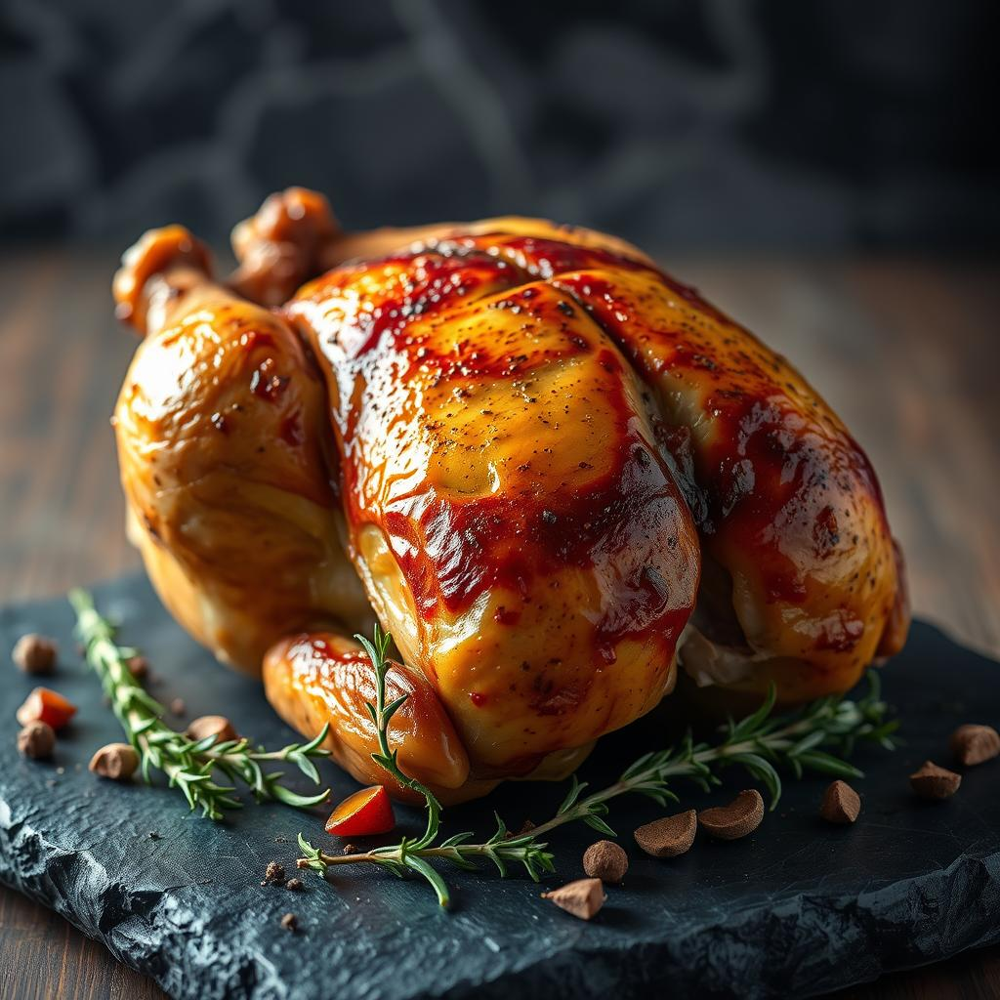
Easy Roasted Chicken Recipe: The Secret to Restaurant-Quality Crispy Skin Every Time
Master the art of an easy roasted chicken recipe that delivers perfectly crispy skin and succulent, herb-infused meat. This herb butter roasted chicken is the ultimate crowd-pleasing dinner. Learn how to achieve golden, caramelized edges in your own oven. Perfect for Sunday meal prep or holiday dinners. #roastedchicken #easyrecipes #dinnerideas #chickenrecipe #foodphotography #roastedchicken #easyrecipes #dinnerideas #crispychicken #foodie #mealprep
READ FULL RECIPE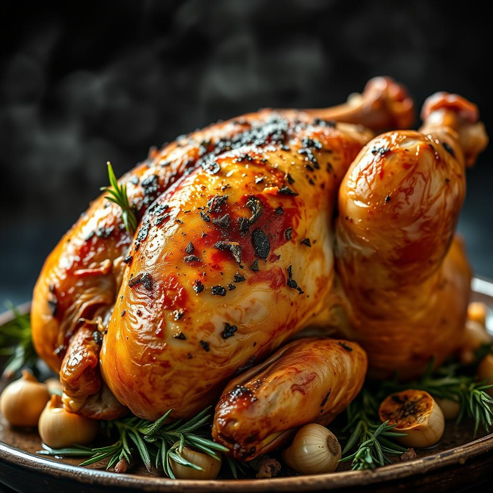
Easy Roasted Chicken Recipe: The Secret to Perfect Crispy Skin
Master the art of the perfect herbed oven roasted chicken with this foolproof guide. Learn how to achieve golden, crispy skin roast chicken every single time with juicy, flavorful meat. This easy roasted chicken recipe is the ultimate weeknight dinner that tastes like a gourmet meal. Perfect for Sunday family dinners! #roastchicken #easydinner #foodphotography #recipeideas #roastchicken #easydinner #foodphotography #recipeideas #comfortfood #healthyrecipes
READ FULL RECIPE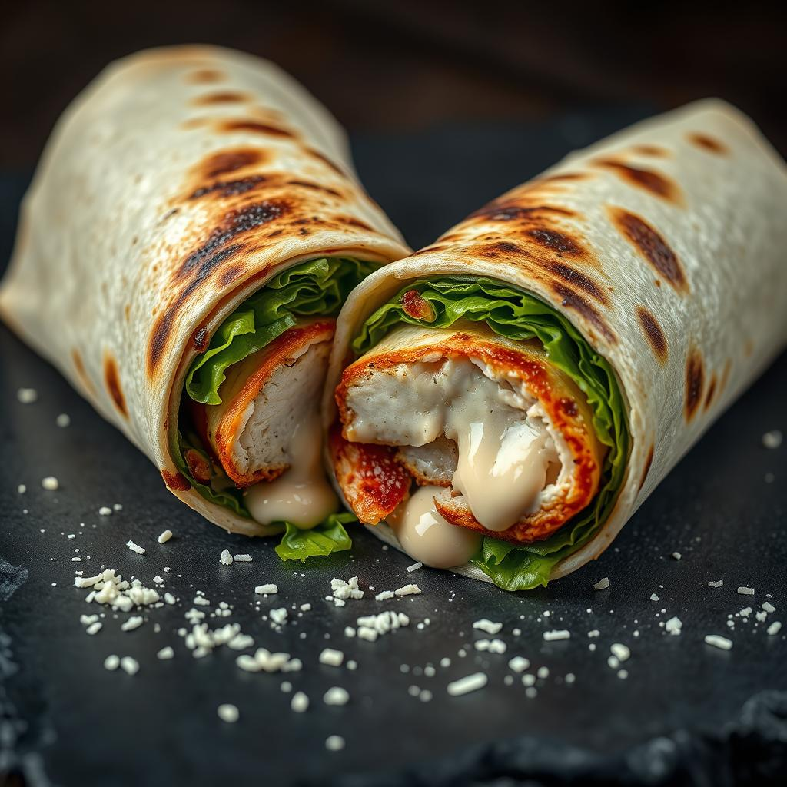
Easy Lunch Meal Prep: The Ultimate 10-Minute Chicken Caesar Wrap You Won't Believe is Healthy!
Master the art of the perfect healthy chicken caesar wrap! This game-changing recipe is the ultimate easy lunch meal prep for busy weeks. Crispy romaine, golden grilled chicken, and a creamy homemade dressing make these quick dinner ideas a total crowd-pleaser. Learn the secret to the perfect wrap fold for an irresistible meal. #chickencaesarwrap #easylunch #mealprepideas #healthyrecipes #quickdinner #chickencaesarwrap #easylunch #mealprepideas #healthyrecipes #quickdinner
READ FULL RECIPE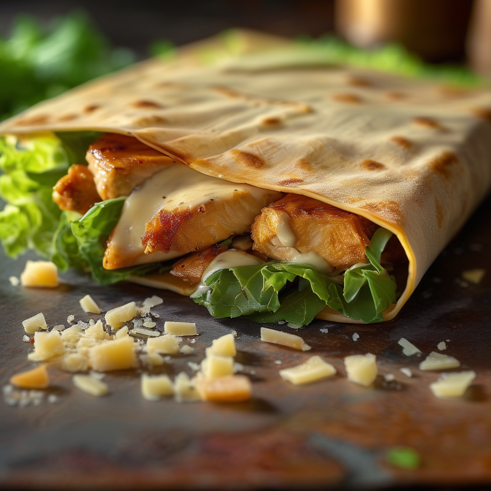
Easy Lunch Recipes: The 10-Minute Chicken Caesar Wrap You'll Crave Daily
Master the art of the perfect healthy chicken wrap! This recipe transforms basic ingredients into a gourmet 15 minute meal. Featuring crunchy romaine, juicy seasoned chicken, and a secret creamy dressing. Perfect for meal prep or a quick lunch! #chickenceasarwrap #easylunchrecipes #healthyrecipes #quickmeals #mealprepideas ['#chickenceasarwrap', '#easylunchrecipes', '#healthyrecipes', '#15minutemeals', '#lunchideas', '#foodphotography']
READ FULL RECIPE
Easy Summer Desserts: 10 Recipes That Don't Require Your Oven
Beat the heat with these refreshing dessert ideas that are perfect for your next backyard party. From no-bake fruit recipes to chilled delights, these easy summer desserts are guaranteed to impress. Discover the ultimate guide to seasonal sweets that stay cool when the temperature climbs! #summerdesserts #nobakerecipes #easydesserts #foodphotography #summerrecipes #summerdesserts #nobakerecipes #refreshingdesserts #easyrecipes #foodphotography #summerfood #dessertgoals
READ FULL RECIPE